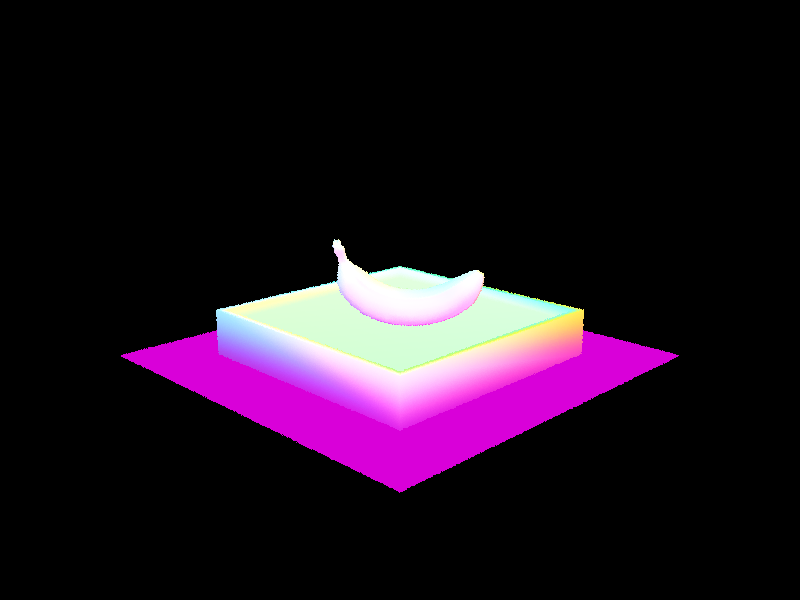

This assignment is organized into two main themes: parametric surfaces (Bézier) and triangle mesh processing.
In Parts 1–2, I implemented evaluation and visualization for Bézier curves/surfaces. The key technique is de Casteljau’s algorithm, which repeatedly performs linear interpolation between adjacent control points to generate lower-level point sets until a single point remains. That final point is the curve value at parameter
𝑡; applying the same idea in two parameter directions evaluates Bézier surfaces. This section helped me connect geometric interpolation with smooth shape generation and practice interactive debugging/visualization.
In Section II (Parts 3–6), I worked with triangle meshes using the half-edge data structure for efficient connectivity traversal and local remeshing. In Part 3, I computed area-weighted vertex normals for Phong shading, producing smoother shading than flat per-face normals. In Parts 4–5, I implemented local remeshing operations (edge flip and edge split), with the main challenge being to correctly reassign half-edge pointers (next/twin/vertex/edge/face) to preserve manifold connectivity. Finally, in Part 6, I implemented Loop subdivision upsampling: I first computed target positions for old vertices and edge-split vertices using the Loop weighting rules, then split all original edges, flipped the appropriate new edges that connect an old vertex and a new vertex, and finally updated vertex positions. This pipeline converts a coarse mesh into a smoother, higher-resolution approximation.
Overall, the assignment ties together geometry (positions/normals) and topology (mesh connectivity): the first half focuses on continuous parametric evaluation, while the second half emphasizes discrete mesh traversal and local topology edits, culminating in a complete subdivision-and-smoothing workflow via Loop subdivision.
To generate a camera ray, I start by mapping the normalized image coordinate ((x, y)) to a point on the virtual sensor plane in camera space. Since the camera is placed at the origin and looks along the negative (z)-axis, the sensor plane is located at (z = -1). Using the horizontal and vertical field of view, I compute the sensor point as \[ x_{cam} = (2x - 1)\tan(hFov/2), \quad y_{cam} = (2y - 1)\tan(vFov/2), \quad z_{cam} = -1. \] This means \((0,0)\) maps to the bottom-left of the sensor and \((1,1)\) maps to the top-right. Once I have that sensor point, I treat the ray direction in camera space as the vector from the camera origin \((0,0,0)\) to \((x_{cam}, y_{cam}, -1)\), and then normalize it. After that, I rotate the direction into world space using `c2w`, and use `pos` as the ray origin. I also set `min_t` and `max_t` to the near and far clip values so the ray only considers intersections in the visible range. Overall, this converts each image sample into a world-space ray that can be used later for intersection tests and radiance estimation.
For this part, I compute the color of each pixel by taking multiple random samples inside the pixel instead of tracing only one ray through a fixed point. Since the input pixel coordinate \((x,y)\) represents the bottom-left corner of the pixel, I add a random offset generated by gridSampler to sample a location inside the pixel. I then normalize that position by the image width and height so it can be passed into camera->generate_ray().
For each sampled point, I generate a camera ray and evaluate the incoming radiance along that ray using est_radiance_global_illumination(). I accumulate all sampled radiance values and divide by the total number of samples at the end. In other words, the final pixel color is estimated by averaging many radiance samples:
\[ L_{pixel} \approx \frac{1}{N}\sum_{i=1}^{N} L_i. \]
This is a Monte Carlo estimate of the radiance integrated over the area of the pixel. Sampling multiple random points inside each pixel also helps reduce aliasing, since the renderer is no longer relying on only a single ray through one fixed location.
For triangle intersection, I used the simplified Möller–Trumbore method. The main idea is to rewrite the hit point using the triangle edges and directly solve for the ray parameter \(t\) together with the barycentric coordinates. I first compute the two edge vectors \[ e_1 = p_2 - p_1,\qquad e_2 = p_3 - p_1, \] and then use the ray equation to solve for the intersection.
Once I get \(t\), \(b_1\), and \(b_2\), I check whether the result is valid. The barycentric coordinates must satisfy
\[
b_1 \ge 0,\qquad b_2 \ge 0,\qquad b_1 + b_2 \le 1,
\]
which ensures that the hit point is inside the triangle. I also check that \(t\) is between min_t and max_t. If the intersection is valid, I update r.max_t to the new \(t\) so later tests only keep the nearest hit.
In has_intersection(), I only return whether a valid hit exists. In intersect()I compute the shading normal by interpolating the three vertex normals with barycentric weights:
\[ \mathbf{n} = (1 - b_1 - b_2)\mathbf{n}_1 + b_1\mathbf{n}_2 + b_2\mathbf{n}_3. \]
After normalizing the result, this gives a smooth normal across the triangle instead of a flat face normal, which makes the normal shading look more continuous.


For sphere intersection, I directly solved the quadratic equation that comes from plugging the ray equation into the sphere equation. Writing the ray as \[ \mathbf{r}(t) = \mathbf{o} + t\mathbf{d}, \] I substitute it into the sphere constraint and get a quadratic in \(t\). The coefficients are \[ a = \mathbf{d}\cdot\mathbf{d}, \qquad b = 2\mathbf{d}\cdot(\mathbf{o}-\mathbf{c}), \qquad c = (\mathbf{o}-\mathbf{c})\cdot(\mathbf{o}-\mathbf{c}) - R^2. \]
If the discriminant is negative, the ray does not hit the sphere. Otherwise, I get two candidate intersection times,
\[
t_1 = \frac{-b - \sqrt{b^2 - 4ac}}{2a}, \qquad
t_2 = \frac{-b + \sqrt{b^2 - 4ac}}{2a},
\]
and sort them so that \(t_1\) is the smaller one. Then I check whether either value lies between min_t and max_t. If so, I keep the closest valid hit and update r.max_t.
The difference between has_intersection() and intersect() is similar to the triangle case: the first only checks whether a hit exists, while the second also fills in the intersection record. In intersect(), after choosing the nearest valid \(t\), I compute the hit point
\[
\mathbf{p} = \mathbf{o} + t\mathbf{d},
\]
and use the normalized vector from the sphere center to that point as the surface normal:
\[
\mathbf{n} = \frac{\mathbf{p} - \mathbf{c}}{\|\mathbf{p} - \mathbf{c}\|}.
\]

I built the BVH recursively in a top-down way. For each range of primitives, I first compute one bounding box that contains all of them and use that box to create the current node. If the number of primitives is already small enough, I stop splitting and make the node a leaf by storing the iterator range directly.
If there are still too many primitives, I split them into two groups. To decide how to split, I look at the centroids of the primitive bounding boxes and build a centroid bounding box. Then I compare the centroid spread in the \(x\), \(y\), and \(z\) directions: \[ \Delta x = x_{max} - x_{min}, \qquad \Delta y = y_{max} - y_{min}, \qquad \Delta z = z_{max} - z_{min}. \] I pick the axis with the largest spread, since that is usually the direction where the primitives are most spread out.
After that, I sort the primitives by centroid along the chosen axis and split them in the middle. So the heuristic I used is basically: choose the axis with the largest centroid extent, then do a median split along that axis. This is simple, keeps the tree fairly balanced, and works well enough for the scenes in this assignment.
The recursion continues until every leaf contains at most max_leaf_size primitives. At that point, the leaf node just stores the primitive range directly instead of splitting further.
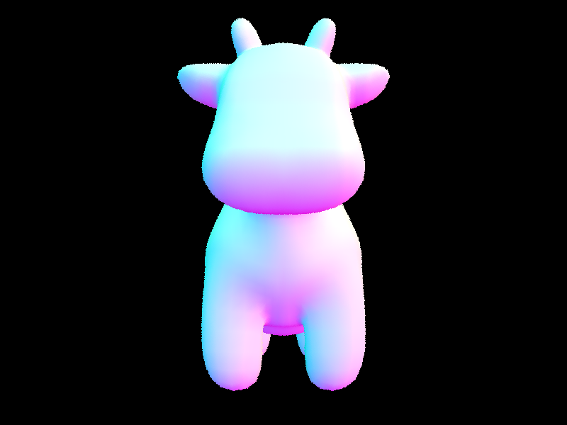
For the bounding box intersection test, I used the slab method. The idea is to intersect the ray with the box independently along the \(x\), \(y\), and \(z\) axes, and then combine the three resulting intervals. Along each axis, the ray gives two candidate values where it enters and leaves the box. After taking the smaller and larger value for each axis, I compute
\[ t_{\text{enter}} = \max(t_{x,\min}, t_{y,\min}, t_{z,\min}), \qquad t_{\text{exit}} = \min(t_{x,\max}, t_{y,\max}, t_{z,\max}). \]
If \(t_{\text{enter}} \le t_{\text{exit}}\), then the ray intersects the box. I also update the input interval \([t_0, t_1]\) by intersecting it with the box interval, so the bounding box test respects the ray’s current valid range.
For BVH traversal, I recursively walk the tree starting from the root. At each node, I first test whether the ray intersects the node’s bounding box. If it does not, I immediately return false and skip that whole subtree. This is where most of the acceleration comes from, because one failed box test can eliminate many primitives at once.
If the node is a leaf, I test the ray against all primitives stored in that leaf. In has_intersection(), I return as soon as I find one hit, since I only care whether any intersection exists. In intersect(), I continue checking all primitives in the intersected leaves, because I need the nearest valid hit rather than just any hit.
If the node is an interior node, I recursively test both children. Since the primitive-level intersection functions already update ray.max_t when they find a closer hit, the traversal automatically keeps track of the closest intersection without needing extra bookkeeping in the BVH code.
So overall, instead of checking every primitive in the scene, the BVH first checks bounding boxes and only descends into regions that the ray might actually hit. This makes the renderer much faster on large scenes.
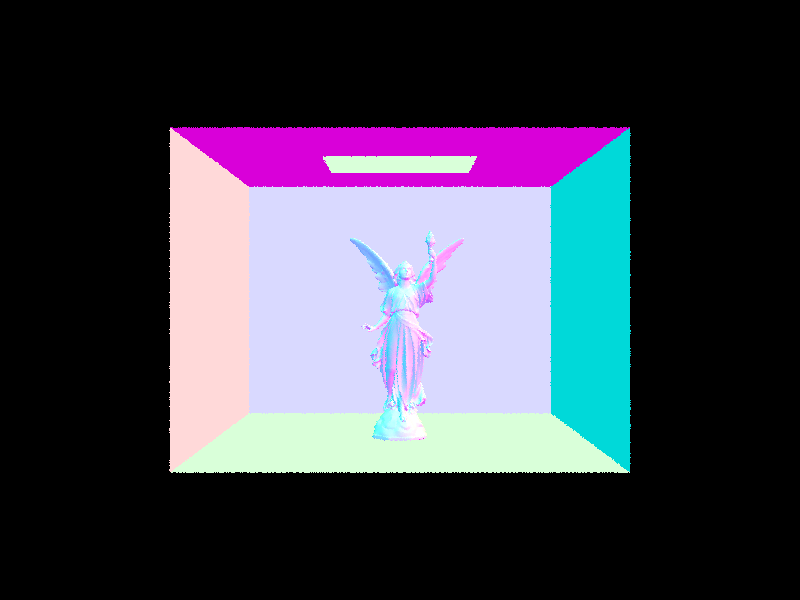
For a Lambertian diffuse material, the BSDF is constant and does not depend on the specific incoming or outgoing direction. This is because an ideal diffuse surface reflects light equally in all directions over the hemisphere. So instead of depending on \(w_i\) and \(w_o\), the diffuse BRDF is just a constant value.
To determine that constant, we use energy conservation. Suppose the BRDF is a constant \(c\). Then under uniform incoming radiance, the reflected outgoing radiance is
\[ L_o = \int_{\mathcal H^2} c\,L_i\,\cos\theta\,d\omega = cL_i \int_{\mathcal H^2}\cos\theta\,d\omega. \]
Over the hemisphere, the cosine-weighted solid angle integral evaluates to
\[ \int_{\mathcal H^2}\cos\theta\,d\omega = \pi. \]
So we get
\[ L_o = cL_i\pi. \]
For a diffuse material with reflectance \(\rho\), energy conservation requires that the surface reflect only a \(\rho\) fraction of the incoming light, so
\[ c\pi = \rho \qquad \Rightarrow \qquad c = \frac{\rho}{\pi}. \]
Therefore, the Lambertian BSDF is
\[ f_r(w_i, w_o) = \frac{\rho}{\pi}. \]
In code, this is implemented as reflectance / PI, where reflectance stores the RGB albedo of the material.
Zero-bounce radiance represents light that reaches the camera directly without reflecting off any surface. So if the camera ray hits an emissive surface, the contribution is just the emission of that surface itself. If the surface is not emissive, then this value is zero.
Because of that, I implemented zero_bounce_radiance() by simply returning
\[
L^{(0)} = L_e,
\]
which in code is given by isect.bsdf->get_emission().
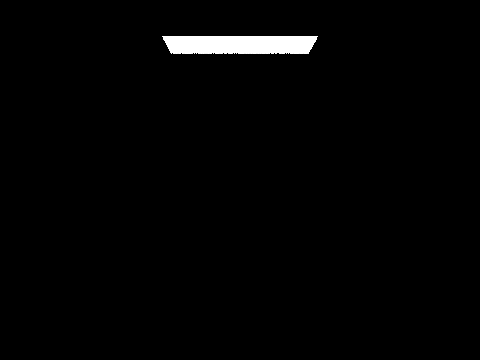
For this part, I estimated direct lighting by uniformly sampling directions over the hemisphere above the surface. At the hit point, I first built a local coordinate system where the surface normal points along the local \(z\)-axis. This makes it easier to sample directions in the hemisphere and evaluate the BSDF in local coordinates.
For each sample, I randomly generate an incoming direction \(w_i\) in the hemisphere, transform it back to world space, and cast a shadow ray from the hit point in that direction. If the ray hits an emissive object, then that sampled direction contributes incoming light. Otherwise, it contributes nothing.
I then use a Monte Carlo estimate of the reflection equation to compute the outgoing radiance:
\[ L_o(w_o) \approx \frac{1}{N}\sum_{k=1}^{N}\frac{L_i(w_i^{(k)})\,f(w_o,w_i^{(k)})\,\cos\theta_k}{p(w_i^{(k)})}. \]
Since I am sampling the hemisphere uniformly, the pdf is \[ p(w_i)=\frac{1}{2\pi}. \] So for each sampled direction, I multiply the incoming emission, the BSDF value, and the cosine term, divide by the pdf, and then average all samples together. This gives an estimate of the direct lighting at the surface point.
This method works, but it can be pretty noisy, because most randomly chosen directions in the hemisphere do not actually hit a light source. As a result, many samples contribute zero, which makes convergence slower.
-s 16 -l 8
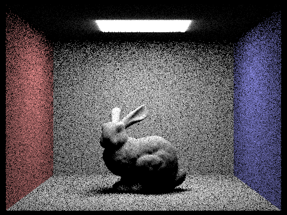
-s 64 -l 32
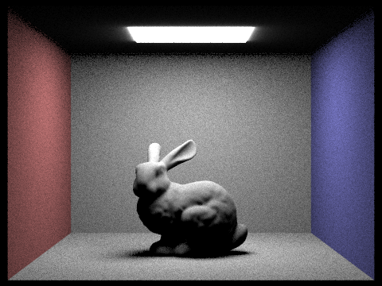
For this part, instead of sampling random directions over the whole hemisphere, I directly sampled the lights in the scene. The main idea is that for direct lighting, the important incoming directions are the ones that actually point toward light sources, so it is much more efficient to sample lights directly than to hope that a random hemisphere direction happens to hit one.
At the hit point, I again build a local coordinate frame using the surface normal, and compute the outgoing direction \(w_o\) in local coordinates. Then I loop over every light in the scene. For each light, I sample it once if it is a delta light, or ns_area_light times if it is an area light.
Each light sample gives me an incoming direction \(w_i\), the emitted radiance \(L_i\), the distance to the light, and the corresponding pdf. I transform \(w_i\) into local coordinates and skip the sample if the light is behind the surface, i.e. if \(w_i.z \le 0\). Otherwise, I cast a shadow ray from the hit point toward the sampled light position, using EPS_F for the lower bound and distToLight - EPS_F for the upper bound. If this shadow ray is not blocked by any object, then the light contributes to the point.
\[ L_o(w_o) \approx \sum_{\text{lights}} \frac{1}{N_l}\sum_{k=1}^{N_l} \frac{L_i(w_i^{(k)})\,f(w_o,w_i^{(k)})\,\cos\theta_k}{p(w_i^{(k)})}. \]
For each valid sample, I multiply the incoming radiance, the BSDF value, and the cosine term, then divide by the sampling pdf. I average over all samples for each light and sum the contributions from all lights. Compared to uniform hemisphere sampling, this method is much less noisy because most samples are taken in directions that are actually relevant to direct illumination.
-s 1 -l 1
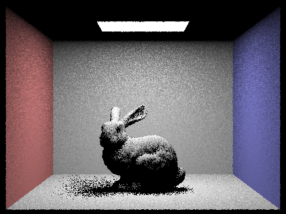
-s 64 -l 32
In this part, sample_f() needs to do two things at once: sample an incoming direction \(w_i\), and return the diffuse BSDF value for that sampled direction. Since this is a Lambertian material, I use the built-in sampler in DiffuseBSDF, which draws directions from a cosine-weighted hemisphere distribution.
The sampled direction is written into wi, and the corresponding sampling density is written into pdf. After that, I simply return the BSDF value by calling
\[
f(w_o, w_i)=\frac{\rho}{\pi}.
\]
Because the Lambertian BRDF is constant, it does not actually depend on the specific directions, but using cosine-weighted sampling matches the \(\cos\theta\) term in the rendering equation and gives lower variance than uniform hemisphere sampling.
Full GI
only direct illumination
only indirect illumination
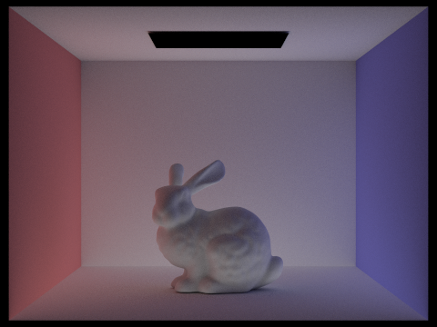
For Part 4 Task 2, I implemented global illumination by recursively tracing additional bounces after the first surface hit. At a high level, the function at_least_one_bounce_radiance() first computes the direct lighting at the current point using one_bounce_radiance(), and then tries to estimate where the light could have come from before reaching this point by sampling a new incoming direction from the BSDF.
To do this, I construct a local coordinate frame using the surface normal, compute the outgoing direction \(w_o\), and sample an incoming direction \(w_i\) with bsdf->sample_f(). This function gives me both the sampled direction and its pdf, as well as the BSDF value for that sample. I then transform the sampled direction back to world space, spawn a new ray from the hit point with an EPS_F offset, and recursively trace that ray if it hits another object.
The contribution from the next bounce is weighted using the Monte Carlo estimator
\[ \frac{f(w_o, w_i)\,L_{\text{next}}(w_i)\,\cos\theta}{p(w_i)}. \]
This way, each recursive call estimates how much light arrived at the next surface, and then transports that contribution back through the current surface. Repeating this process lets the renderer capture indirect lighting such as soft global illumination and color bleeding.
I also use isAccumBounces to switch between two modes. When it is enabled, the renderer accumulates all bounces up to the maximum depth. When it is disabled, it isolates individual bounce levels, which is useful for visualizing the first, second, third, and higher-order bounce contributions separately.
isAccumBounces=false, m = 0
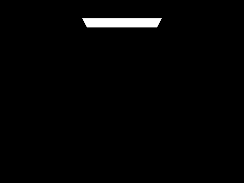
isAccumBounces=false, m = 1
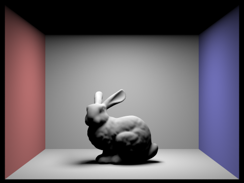
isAccumBounces=false, m = 2
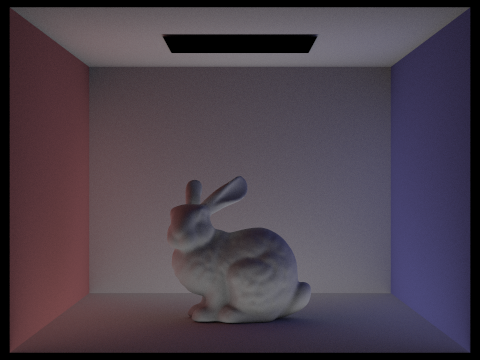
isAccumBounces=false, m = 3
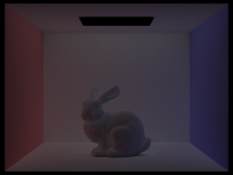
isAccumBounces=false, m = 4
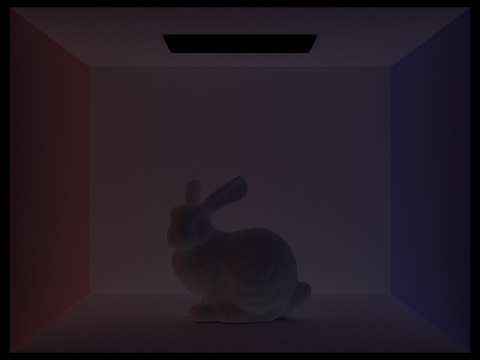
isAccumBounces=false, m = 5
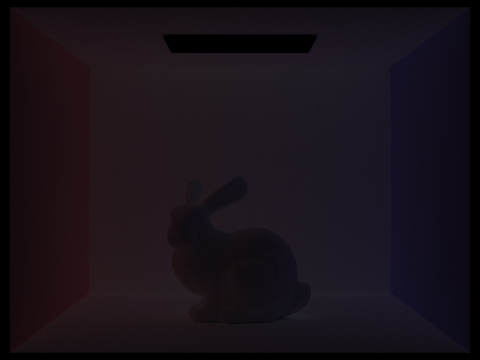
isAccumBounces=true, m = 0
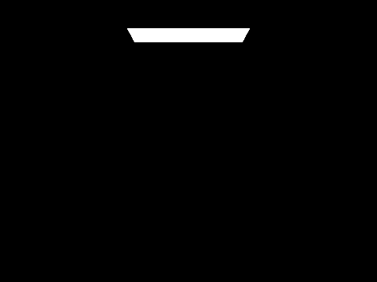
isAccumBounces=true, m = 1
isAccumBounces=true, m = 2
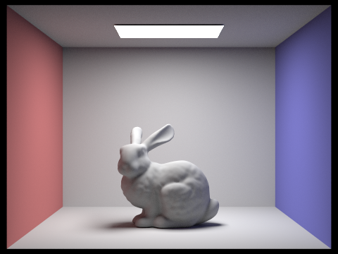
isAccumBounces=true, m = 3
isAccumBounces=true, m = 4
isAccumBounces=true, m = 5
For Russian Roulette, the goal is to avoid tracing very long light paths when their contribution is likely to be small. Instead of always continuing the recursion until the maximum depth, I let deeper bounces terminate randomly with some probability. In my implementation, the first indirect bounce is always traced, and after that each later bounce only continues with continuation probability \(p_c\).
If a path is terminated, the recursion stops there. If it continues, I recursively trace the next bounce as usual, but divide the returned contribution by \(p_c\) to keep the estimator unbiased. So the indirect bounce term becomes
\[ L_{\text{indirect}} \approx \frac{f(w_o,w_i)\,L_{\text{next}}(w_i)\,\cos\theta}{p(w_i)\,p_c}. \]
The reason for dividing by \(p_c\) is that only a fraction of the paths are allowed to survive, so the surviving paths need to be reweighted to preserve the correct expected value. In practice, this makes rendering much more efficient for high bounce depths, because the renderer spends less time tracing paths that would only add a tiny amount of light. Even though the result may vary slightly from run to run, it is still correct in expectation.
Russian Roulette, m = 0
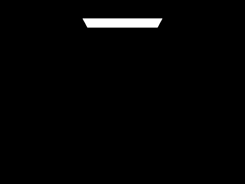
Russian Roulette, m = 1
Russian Roulette, m = 2
Russian Roulette, m = 3
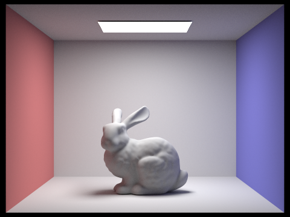
Russian Roulette, m = 4
Russian Roulette, m = 100
l = 4, s = 1
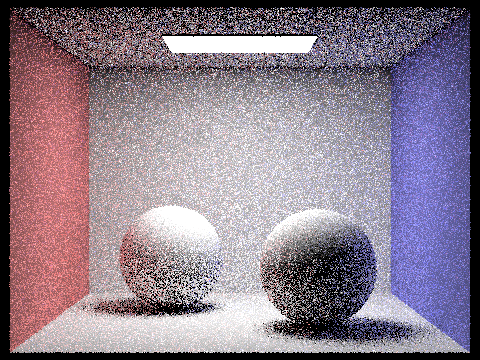
l = 4, s = 2
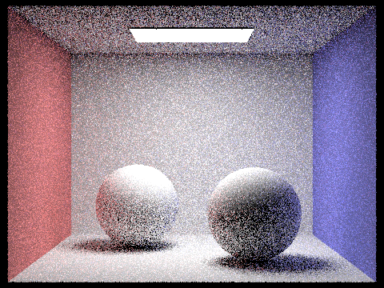
l = 4, s = 4
l = 4, s = 8
l = 4, s = 16
l = 4, s = 64
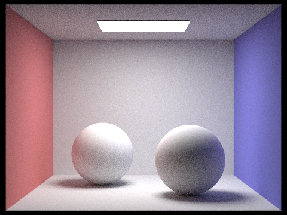
l = 4, s = 1024
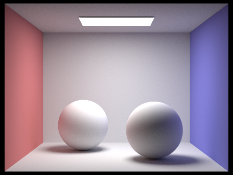
For adaptive sampling, instead of always tracing the full maximum number of samples for every pixel, I check whether a pixel seems to have already converged and stop early if it has. The main idea is that some pixels are easy and become stable quickly, while other pixels, especially around edges, shadows, or noisy indirect lighting, need many more samples.
In my implementation, I still trace samples one by one inside raytrace_pixel(), but I keep track of the running statistics of the pixel illuminance instead of storing every sample separately. For each sample radiance \(L_k\), I compute its illuminance \(x_k\) using illum(), and accumulate
\[ s_1=\sum_{k=1}^{n} x_k, \qquad s_2=\sum_{k=1}^{n} x_k^2. \]
After every batch of samplesPerBatch samples, I estimate the sample mean and variance as
\[ \mu=\frac{s_1}{n}, \qquad \sigma^2=\frac{1}{n-1}\left(s_2-\frac{s_1^2}{n}\right). \]
From that, I compute the convergence measure
\[ I = 1.96 \cdot \frac{\sigma}{\sqrt{n}}. \]
If
\[ I \le \text{maxTolerance} \cdot \mu, \]
then I treat the pixel as converged and stop taking more samples for it. Otherwise, I keep sampling until either the pixel converges or I reach the maximum sample count ns_aa.
At the end, I average all sampled radiance values to get the final pixel color, and I also store the actual number of samples used in sampleCountBuffer. This lets the renderer generate a sampling rate image, where regions that are harder to converge show higher sample counts. In practice, this means smoother regions often stop early, while detailed edges, shadow boundaries, and noisy indirect-lighting regions keep receiving more samples.
original
adaptive
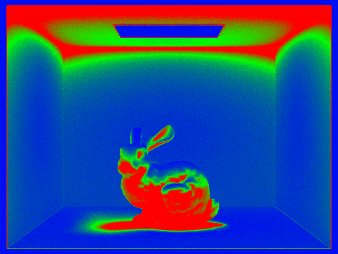
original
adaptive
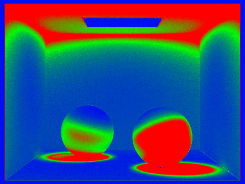